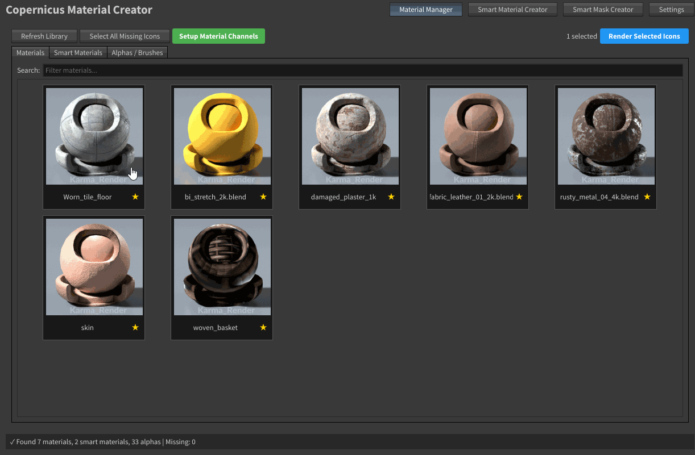
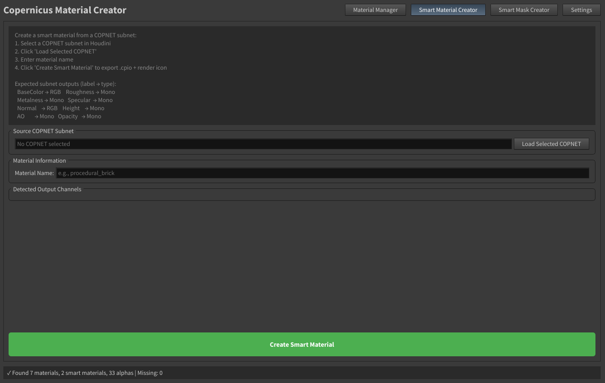
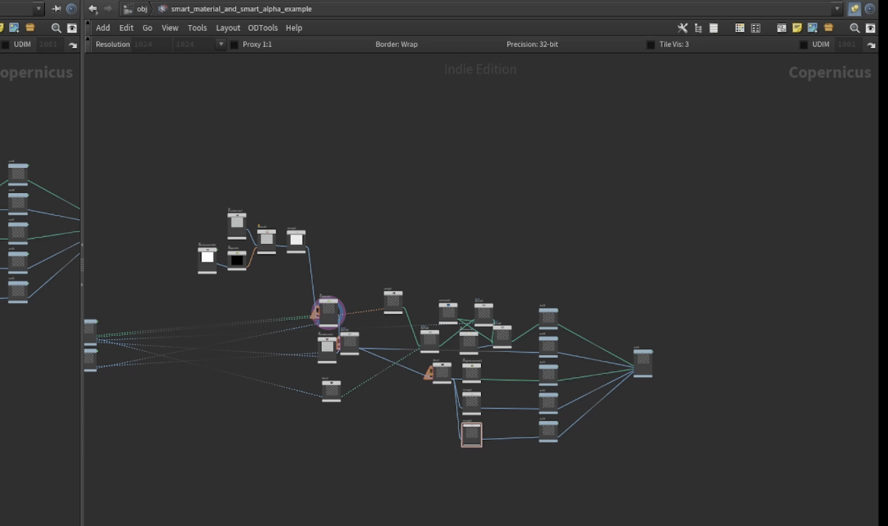
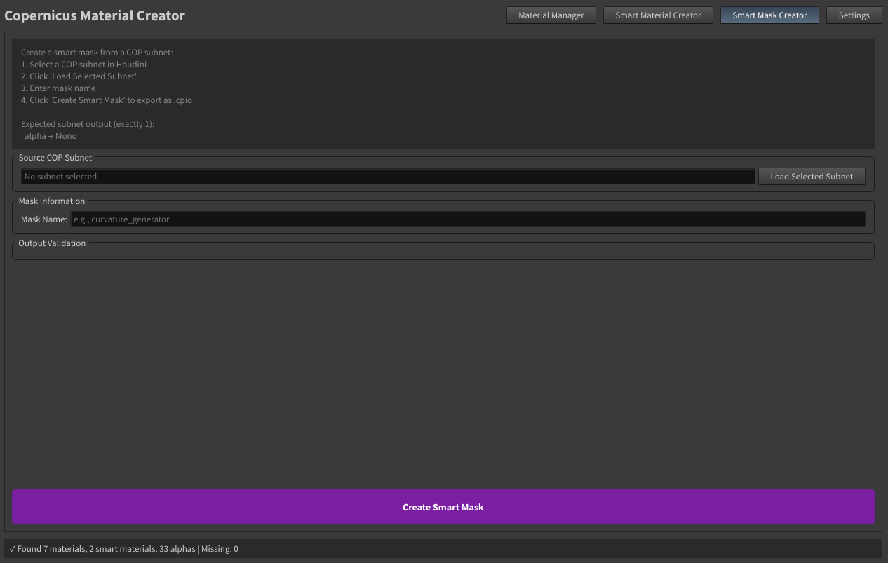

Material Creator — Workflow
The Create Materials Python Panel is a companion tool for building and publishing material assets directly into your Copernicus Painter library.
It has four modes, selectable from the buttons at the top:
| Mode | Purpose |
|---|---|
| Material Manager | Browse, preview, and manage existing materials in the library |
| Smart Material Creator | Export a COP subnet as a smart material .cpio and render its icon |
| Smart Mask Creator | Export a COP subnet as a smart mask .cpio |
| Settings | Read-only view of the library paths set in Copernicus Painter |

Material Manager
Browse all materials, smart materials, and alphas currently in the library. Switch between the Materials, Smart Materials, and Alphas tabs. Use the search bar to filter by name. Select one or more thumbnails to see selection info in the toolbar.
Smart Material Creator

This mode lets you turn a COP subnet into a reusable smart material preset.
Step 1 — Build the subnet in Houdini
Inside a COP network, create a subnet node. Inside it, build your material graph using any COP nodes (generators, filters, color corrections, etc.).
Output naming convention — this is the critical part:
The subnet must have named outputs. The tool reads output labels to know which channel each output belongs to. Use exactly these labels:
| Output Label | Channel | Type |
|---|---|---|
BaseColor |
Base Color | RGB |
Roughness |
Roughness | Mono |
Metalness |
Metalness | Mono |
Specular |
Specular | Mono |
Normal |
Normal | RGB |
Height |
Height | Mono |
AO |
Ambient Occlusion | Mono |
Opacity |
Opacity | Mono |
To set output labels on a subnet in Houdini: select the subnet → go to its parameters → set Output 1 Label, Output 2 Label, etc.
You do not need to provide all channels — only the ones you define will be exported.
Input naming convention (for bake-driven smart materials):
If your material needs baked maps (position, world normals, occlusion, etc.) as inputs, add subnet inputs with these exact labels:
| Input Label | Source |
|---|---|
position |
Baked position map |
worldnormal |
Baked world-space normal map |
occlusion |
Baked ambient occlusion map |
curvature |
Baked curvature map |
edge |
Baked edge map |
cavity |
Baked cavity map |
thickness |
Baked thickness map |
alpha |
Baked alpha map |
Copernicus Painter will automatically wire the corresponding bake stash nodes to these inputs when the smart material is applied to a layer — but only after baking.
Step 2 — Load the subnet
In the Smart Material Creator panel:
- Select your subnet node in the Houdini network editor
- Click Load Selected COPNET
- The Detected Output Channels section will show which outputs were recognized
Step 3 — Name and create
- Enter a Material Name (e.g.
rust_procedural) - Click Create Smart Material
The tool will:
- Export the subnet as a .cpio file into your Smart Materials folder
- Render a shaderball preview icon using the subnet outputs
- Add the material to the library automatically

Smart Mask Creator

This mode lets you turn a COP subnet into a reusable smart mask preset. It works very similarly to the Smart Material Creator.
Step 1 — Build the subnet in Houdini
Inside a COP network, create a subnet node. Inside it, build a mask graph — anything that produces a single greyscale (mono) output.
Output naming convention:
The subnet must have exactly one output, labeled:
alpha
This tells Copernicus Painter the output is a mask channel.
Input naming convention (for bake-driven smart masks):
Exactly the same as smart materials — use the bake stash labels (position, worldnormal, occlusion, curvature, edge, cavity, thickness, alpha) so Copernicus Painter can wire the baked maps automatically after baking.
Important: Label names are case-sensitive and must match exactly. A subnet input labeled
Position(capital P) will not be wired automatically — useposition.
Step 2 — Load the subnet
- Select your subnet node in the Houdini network editor
- Click Load Selected Subnet
- The Output Validation section will confirm the output is valid
- Any promoted parameters on the subnet will be listed under Subnet Parameters
Step 3 — Name and create
- Enter a Mask Name (e.g.
edge_wear) - Click Create Smart Mask
The tool will:
- Export the subnet as a .cpio file into your Smart Masks folder (inside a subfolder named after the mask)
- The mask will appear in Copernicus Painter's Smart Masks library after refreshing
Settings
Read-only view of the library paths. To change paths, go to the Settings tab in Copernicus Painter.